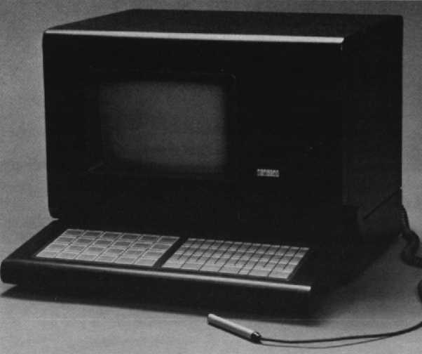
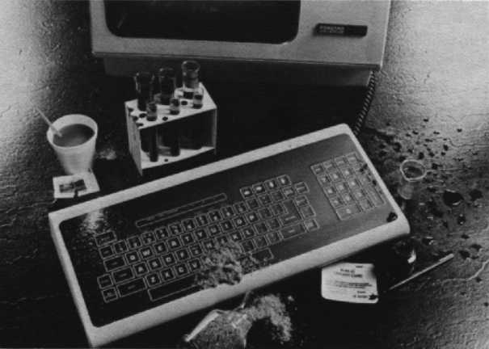

Terminals and Printers Handbook 1983-84
Chapter 8
Ruggedized Terminals
Overview
Information is highly critical to manufacturing operations. It must be read, it must
be current, and it must be readily available – regardless of local conditions.
Digital's RT family of ruggedized terminals – the RT100, RT102, RT103, and RT137
– are specifically designed for use in harsh, industrial environments. But what is
a harsh, industrial environment and how can ruggedized terminals withstand the conditions
there?
- Manufacturing plants. Great amounts of dust, dirt and grease can get into unsealed
areas of terminals and disrupt their operation. Digital's ruggedized terminals are sealed
in outer casings of durable metal.
- Automotive production lines. Here the possibility of paint vapors affecting the
operation of nonruggedized terminals and heavy tools being dropped on terminals exist.
Ruggedized terminals' outer casings are built of durable metals.
- Steel foundries. Dust and heat can combine to create harsh environments. Digital's
ruggedized terminals have cooling fans built right in.
- Milling and grinding operations. Oil droplets and metal particles can get into
unsealed areas of terminals and disrupt their operations. Digital's ruggedized terminals
are resistant to the effects of these substances because of their durable, sheet metal
construction.
- Chemical plants. Here the display unit and keyboard are exposed to liquid spills.
Ruggedized terminals have a membrane style keyboard, which provides resistance to most
liquids, grease, oil and dust. Membrane style keyboards are easy to clean. Digital's
ruggedized terminals' monitors and associated electronics are housed in a metal enclosure,
which makes them resistant to liquid spills too.
- Mines. Ruggedized terminals prevent dirt and dampness from affecting terminal
operations.
- Any cluttered shopfloor. Terminals must be positioned for your easy access. Digital's
RT terminals can be installed on a bench, table or shelf. The keyboard is detachable, or
can be used perpendicular to or dropped to form a straight plane with the terminal
screen.
Digital's RT terminals work with any UNIBUS or LSI-11 PDP-11, VAX, or DECsystem-10 and
-20 processor and are supported by all Digital operating systems.
RT100 Ruggedized Terminal
The RT100 ruggedized video terminal combines full VT100 functionality with packaging
to withstand the abuse of hostile industrial environments where full data collection
capability is needed. Its industrial packaging includes:
- A flat membrane, full alphanumeric keyboard, and numeric keypad. This keyboard allows
simple, efficient data entry and interaction. It also is resistant to most liquids,
grease, oil and airborne particles.
- The display and keyboard are housed in durable metal enclosures. The keyboard is
detachable, allowing you to mount either the display or keyboard on a shelf or
tabletop.
- A fan ventilates the enclosure by exhausting air out of the rear of the cabinet. An
easy-to-service slide-out air filter greatly reduces dust and particulate
infiltration.
- Each terminal is resistant to the effects of airborne particles, of temperature, of
humidity to mechanical shock, and to vibration.
The RT100 possesses full universal VT100 performance characteristics and compatibility.
Like the VT100, an RT100's performance can be enhanced with the advanced video option,
which adds such video attributes as blinking, underlining, bolding, and reverse video. For
more details on the RT100's capabilities, read the description of the VT100 terminal.
The following RT100 models are available:
- RT100-AA
- Industrial VT100, 120 Vac, 50/60 Hz, RS232 interface.
- RT100-AB
- Industrial VT100, 240 Vac, 50/60 Hz, RS232 interface.
- RT100-BA
- Industrial VT100, 120 Vac, 50/60 Hz, 20 mA interface.
- RT100-BB
- Industrial VT100, 240 Vac, 50/60 Hz, 20 mA interface.
RT102 Ruggedized Terminal
The RT102 terminal, a ruggedized version of Digital's VT102 video terminal, contains
all the universal performance characteristics of the VT100 terminal, the ruggedized
features of the RT100 terminal, and the built-in advanced video option and printer port of
the VT102.
For formatting, prompting, guidance, and alarm functions, the RT102's advanced video
feature permits any character to be displayed in a user-selectable combination of
blinking, underlining, boldface, and reverse video. The advanced video option also
increases screen capacity by greater than 70 percent. The RT102 includes the built-in
printer port connector. Immediate printout of data on the video display is possible by
either operator or host command for use when additional analyses or status documentation
is required.
The following RT102 models are available:
- RT102-AA
- Industrial VT102, 120 Vac, 50/60 Hz, RS232 interface.
- RT102-AB
- Industrial VT102, 240 Vac, 50/60 Hz, RS232 interface.
- RT102-BA
- Industrial VT102, 120 Vac, 50/60 Hz, 20 mA interface.
- RT102-BB
- Industrial VT102, 240 Vac, 50/60 Hz, 20 mA interface.
RT100 and RT102 Specifications†
Communications
| Data interface |
EIA (RS232) or 20 mA current loop |
Power Requirements
| RT100 |
120/240 Vac; 50/60 Hz |
| RT102 |
120/240 Vac; 50/60 Hz |
| Power Consumption |
|
| RT100 |
150 W |
| RT102 |
70 W |
Operating Environment
| Temperature |
|
| Operating |
5°C to 50°C
(41°F to 122°F) |
| Storage |
-40°C to 66°C
(-40°F to 151°F) |
| Relative Humidity |
|
| Operating |
10% to 90%, non-condensing |
| Storage |
0% to 95%, non-condensing |
Physical Characteristics
| Width |
52.1 cm (20.5 in) |
| Depth |
67.3 cm (26.5 in) |
| Height |
41.9 cm (16.5 in) |
| Weight |
39 kg (86 lb) |
† Other specifications are the same as the VT100.
RT137 Terminal with Bar Code Capability
The RT137 monitor and keyboard are housed in metal enclosures, like the other
members of Digital's industrial terminal family, and provide bar code handling
capability.
|  |
Designed for data-collection applications that require or can benefit from
machine-readable input, the RT137 combines the flexibility of bar code with RT100 terminal
features.
A bar code reader module that is an integral component of the RT137 architecture, a bar
code wand, and adaptable bar code keyboard provide versatility for data collection
applications. The RT137's construction not only means it can operate reliably in harsh
industrial environments, but also allows the terminal to be located right where you need
it.
The bar code legend can be used to represent almost any form of data, allowing the
encodement of part numbers, quantities, transaction types, warehouse locations, and badge
numbers, to name a few.
The RT137 contains all the ruggedized features of the RT100 terminal, but also includes
a bar code wand. This wand is a ruggedly constructed visible-light pen that is virtually
immune to mechanical shock and vibration.
As with other ruggedized Digital terminals, the RT137 has all the universal performance
characteristics of our VT100 terminal, plus the following features.
- The VT100 functionality allows bar code input and data/transaction messages to be
displayed and provides double-width/double-height characters, scrolling, reverse video,
blinking, underlining, and split screens. These capabilities also make the RT137 useful
for FMS and DATATRIEVE data collection reporting applications.
- The RT137 is adaptable to four industry standards: CODE 39 (full alphanumeric); 2-of-5
(numeric, high density); Interleaved 2-of-5 (numeric, high density); and CODE 11 (high
density).
- The bar code wand uses a long-life LED visible-light source. The want is virtually
immune to mechanical shock and vibration. It operates efficiently with many types of
printed bar code and provides a high first-read rate for bar code printed by dot-matrix
printers.
The following RT137 models are available:
- RT137-AA
- RT137-AE and VT100 keyboard, 120 Vac, EIA interface.
- RT137-AE
- Barcode terminal, keyboard, and wand, 120 Vac, EIA interface.
- RT137-AK
- RT137-AE and industrial membrane keyboard.
- RT137-AM
- RT137-AE, without keyboard and wand.
- RT137-BA
- RT137-BE, VT100 keyboard, 120 Vac, 20 mA interface.
- RT137-BE
- Barcode terminal, keyboard, and wand, 120 Vac, 20 mA interface.
- RT137-BK
- RT137-BE and industrial membrane keyboard.
- RT137-BM
- RT137-BE without keyboard and wand.
RT137 Specifications†
Communications
| Data interface |
EIA (RS232) or 20 mA current loop |
Power Requirements
| Voltage |
120/240 Vac |
| Frequency |
50/60 Hz |
| Power Consumption |
150 W |
Operating Environment
| Temperature |
|
| Operating |
5°C to 50°C
(41°F to 122°F) |
| Storage |
-40°C to 66°C
(-40°F to 151°F) |
| Relative Humidity |
|
| Operating |
10% to 90%, non-condensing |
| Storage |
0% to 95%, non-condensing |
Physical Characteristics
| Width |
52.1 cm (20.5 in) |
| Depth |
67.3 cm (26.5 in) |
| Height |
41.9 cm (16.5 in) |
| Weight |
40 kg (88 lb) |
† Other specifications are the same as the VT100.
RT1XX-AE Membrane Keyboard
The RT1XX-AE Membrane Keyboard is complete sealed to prevent damage to internal
electronics.
|  |
Digital's RT1XX-AE ruggedized membrane keyboard for the VT100 family extends the range
of user environments. These environments include:
- Research labs. "Clean environments" where the keyboard is washed down several times a
day and is exposed to liquid spills and other potentially damaging substances. The flat
membrane keyboard tolerates most commercial and industrial cleansers and disinfectants
and is completely sealed to that liquids cannot seep into the mechanics of the keyboard
and disrupt its operation.
- Public libraries. Here terminals are used instead of a card catalog. This means that
the keyboard is subjected to constant use and unintentional misuse by unskilled users.
The membrane keyboard eliminates the possibility of lost keycaps.
- Light industrial areas. The flat membrane design enables the keyboard to withstand
physical abuse and a wide range of liquid, solid, and airborne contaminants.
The RT1XX-AE is functionally compatible with the standard VT100-series keyboard and
will work with VT100-series video displays. A full alphanumeric keyboard with a numeric
keypad, including auxiliary keys to generate control sequences and cursor commands, lets
you take full advantage of the versatile VT100-series terminals.
RT1XX-AE Specifications
Operating Environment
| Temperature |
|
| Operating |
10°C to 40°C
(50°F to 104°F) |
| Relative Humidity |
|
| Operating |
10% to 90% |
Physical Characteristics
| Width |
45.7 cm (18 in) |
| Depth |
20.3 cm (8 in) |
| Height |
8.9 cm (3.5 in) |
| Weight |
2 kg (4.5 lb) |
http://vt100.net/docs/tp83/chapter8.html